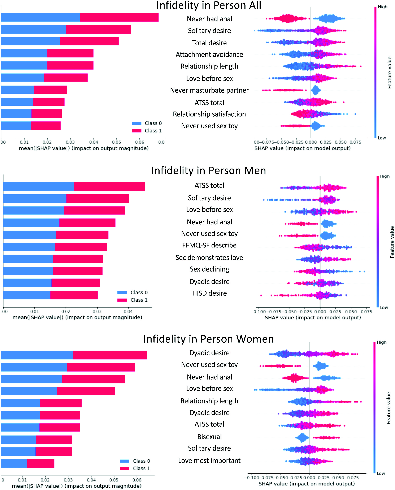
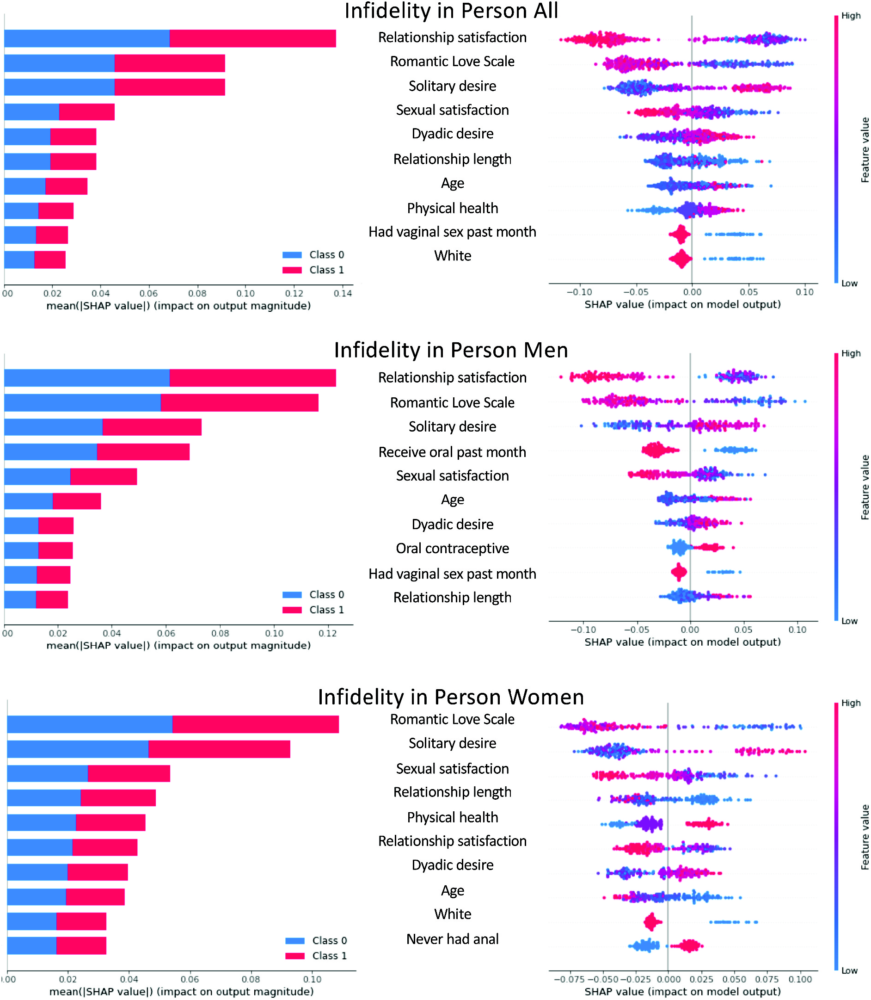
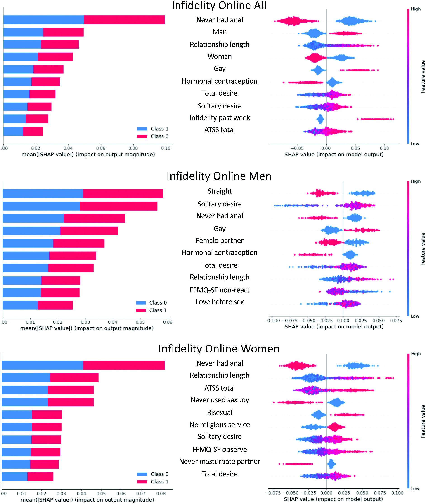
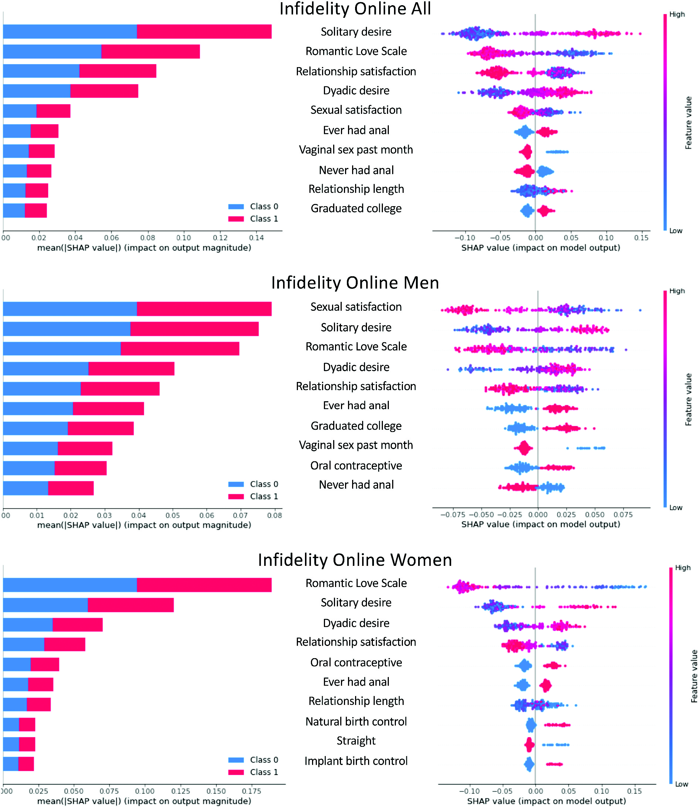

| 变量/构念 | 变量分组 | 量表 | 变量类型 |
|---|---|---|---|
| 年龄 | 人口统计学 | 自编 | 连续 |
| 种族/民族 | 人口统计学 | 自编 | 分类 |
| 性别 | 人口统计学 | 自编 | 分类 |
| 性取向 | 人口统计学 | 自编 | 分类 |
| 关系状态 | 人口统计学 | 自编 | 分类 |
| 是否有子女 | 人口统计学 | 自编 | 分类 |
| 教育水平 | 人口统计学 | 自编 | 分类 |
| 避孕情况 | 行为/健康 | 自编 | * |
| 性行为情况 | 行为 | 自编 | * |
| 心理健康 | 健康 | 自编 | * |
| 身体健康 | 健康 | 自编 | * |
| 想要更多/更少性行为 | 性需求/关系互动 | 自编 | * |
| 想要更多/更少沟通 | 关系互动 | 自编 | * |
| 性欲 | 心理/性心理构念 | Sexual Desire Inventory, SDI(Spector et al., 1996) | 连续 |
| 伴侣性欲（dyadic desire） | 心理/性心理构念 | SDI | 连续 |
| 独处性欲（solitary desire） | 心理/性心理构念 | SDI | 连续 |
| 哈尔伯特性欲 | 心理/性心理构念 | Halbert Index for Sexual Desire, HISD(Yousefi et al., 2013) | 连续 |
| 特质正念 | 心理特质 | Five Facet Mindfulness Questionnaire–Short Form, FFMQ-SF(Bohlmeijer et al., 2011) | 5个分量表 |
| 不反应 | 正念 | FFMQ-SF | 连续 |
| 观察 | 正念 | FFMQ-SF | 连续 |
| 有觉察地行动 | 正念 | FFMQ-SF | 连续 |
| 描述感受 | 正念 | FFMQ-SF | 连续 |
| 非评判态度 | 正念 | FFMQ-SF | 连续 |
| 性态度 | 态度 | Attitudes Toward Sexuality Scale, ATSS(Fisher & Hall, 1988) | 连续 |
| 爱情最重要 | 爱情/性观念 | Perception of Love and Sex Scale, PLSS(Hendrick & Hendrick, 2002) | 连续 |
| 性能表达爱情 | 爱情/性观念 | PLSS | 连续 |
| 先爱后性 | 爱情/性观念 | PLSS | 连续 |
| 性正在衰退 | 爱情/性观念 | PLSS | 连续 |
| 依恋焦虑 | 依恋风格 | ECR-S | 连续 |
| 依恋回避 | 依恋风格 | ECR-S | 连续 |
| 性满意度 | 满意度 | General Measure of Sexual Satisfaction, GMSEX(K. Lawrance & Byers, 1992) | 连续 |
| 关系满意度 | 满意度 | General Measure of Relationship Satisfaction, GMREL(K.-A. Lawrance & Byers, 1995) | 连续 |
| 现实不忠 | 因变量 | 自编 | 0，1 |
| 线上不忠 | 因变量 | 自编 | 0，1 |
1 引言
- 不同不忠定义和测量情况下，不忠的概率从20%到50%不等
- 常见定义：在双方约定的关系范围之外进行感情或性关系
- 行为：调情、有感情联系、性交、使用色情作品
- 网络技术发达：发送色情短信、发送露骨照片、观看网络色情直播
- 生态伴侣系统图（Ecological Couples System Diagram，ECSD，图 1）
- 本研究关注：个体、伴侣、二元因素
2 前人研究
- 社会人口学
- 性别：男性性不忠、女性情感不忠，但更多研究认为性别相似性大于差异性，尤其是同时考虑性和情感时
- 关系状况
- 教育：存在争议
- 宗教：存在争议
- 忠诚（commitment）：正向
- 个体因素
- 开放性态度、性兴趣和不忠正相关
- 依恋：焦虑和回避更容易不忠
- 伴侣水平
- 关系满意度、性生活频率、性态度不匹配
3 机器学习
- 线性模型：不能估计非线性关系、复杂交互
- 机器学习：可以处理大量变量、非线性关系、复杂交互、变量重要性
- 模型现在可解释
4 本研究
- 因变量是性不忠和线上不忠（情感不忠未获取数据）
- 所有变量都加入，不重要变量权重自动为0
- 机器学习是探索性的，所以不作假设
- k折交叉验证，提供验证
- 数据集
- 研究1是个体水平
- 研究2是伴侣水平
- 针对不同性别进行了分析
5 方法
5.1 研究1
5.1.1 被试和流程
- 2014年的横断研究，众包平台、邮件、短信、网站等招募，18岁及以上，至少经历过一次单配偶式浪漫关系
- 去除不符合要求的被试后得到891名被试
- 557男、279女、25非二元
- 483异性恋、189双性恋、101男同性恋、60女同性恋
- 大多数白人（88.4%）、已婚或同居（62.7%）、一个孩子及以上（24.5%）、大学学历及以上（95.8%）、不信仰任何宗教（54.5%）
- 平均年龄32.7（±9.63）、关系长度6.21 (7.12)
5.1.2 测量
- 一共95个变量（包含编码后的哑变量）
5.2 研究2
5.2.1 被试和流程
- 2012年的纵向伴侣数据，网站和社媒招募，18岁及以上，至少3年的异性单配偶式关系，目前和伴侣同居，无1岁以下小孩，未怀孕
- 202对异性被试（404人）
- 大部分美国（89%），少部分加拿大（11%）；96%至少接受大学教育
- 平均年龄32.5（±8.90）、关系长度9.19 (6.85)
5.2.2 测量
- 一共66个变量（和研究1比少了的主要是异性恋情侣部分问题选项更少）
- 依恋风格（ECR-S）、性态度（ATSS）、哈尔伯特性欲指数（HISD）、特质正念（FFQM-SF）、爱情/性观念（PLSS）
- 增加浪漫爱情量表(Rubin, 1970)
- 从属和依赖需要、助人倾向、排他性与专注投入的取向
- 因变量和@tbl-1 中的相同
5.3 数据分析
5.3.1 数据预处理
- 分类变量均转换为0,1变量
- 排除与因变量实质相同的变量
- 随机森林多重插补处理缺失数据（不到1%）
5.3.2 分析
- 个体水平数据分男、女进行分析
- 伴侣水平数据也分男、女进行分析，同时考虑行动者（actor）效应和伴侣（partner）效应
- 使用平衡随机森林分类器（balanced random forest classifier）处理分类因变量
- 随机森林不进行超参数调优也能获得很好的结果，防止调优减少样本数
- 自举法对因变量的多数类进行欠采样来进行平衡
- 10 折交叉验证
- 选择精确率、召回率、F1分数和Mathews相关系数（MCC）作为模型表现指标
- 使用SHAP值对模型进行解释
6 结果
6.1 不忠行为发生率
- 研究1（个体水平）
- 32.0%有过线下不忠，43.4%男性；25.7%女性
- 26.6%有过线上不忠，41.6%男性；18.5%女性
- 研究2（伴侣水平）
- 17.4%有过线下不忠，18.8%男性；15.9%女性
- 14.1%有过线上不忠，16.8%男性；11.4%女性
6.2 预测准确率
- 研究1报告了总体样本和分性别样本（样本类型3 × 不忠类型2）
- 研究2报告总体和分性别，同时区分了不包含伴侣效应和包含伴侣效应（样本类型3 × 不忠类型2 × 是否包含伴侣效应2）
- 选择MCC作为指标，0.1为小效应、0.3为中效应、0.5为大效应
| Outcome | Class | Pre | Rec | F1 | MCC | Pre | Rec | F1 | MCC |
|---|---|---|---|---|---|---|---|---|---|
| Infidelity | |||||||||
| All: | 0 | .81 (.02) | .65 (.02) | .72 (.02) | .28 (.03) | .92 (.01) | .80 (.02) | .85 (.01) | .36 (.06) |
| 1 | .48 (.03) | .69 (.02) | .56 (.02) | .40 (.05) | .62 (.06) | .48 (.06) | |||
| Men: | 0 | .70 (.05) | .66 (.03) | .66 (.03) | .28 (.08) | .91 (.03) | .69 (.03) | .78 (.02) | .32 (.03) |
| 1 | .58 (.04) | .63 (.05) | .59 (.03) | .34 (.03) | .73 (.07) | .44 (.04) | |||
| Men dyadic: | 0 | .92 (.02) | .77 (.03) | .84 (.02) | .42 (.06) | ||||
| 1 | .43 (.06) | .75 (.07) | .52 (.05) | ||||||
| Women: | 0 | .84 (.02) | .65 (.03) | .73 (.02) | .25 (.04) | .92 (.02) | .79 (.03) | .85 (.03) | .35 (.09) |
| 1 | .39 (.03) | .62 (.05) | .46 (.03) | .36 (.07) | .64 (.10) | .79 (.08) | |||
| Women dyadic: | 0 | .93 (.02) | .78 (.04) | .84 (.02) | .35 (.08) | ||||
| 1 | .36 (.06) | .65 (.11) | .44 (.07) | ||||||
| Infidelity online | |||||||||
| All: | 0 | .87 (.02) | .70 (.02) | .77 (.01) | .36 (.02) | .94 (.02) | .80 (.02) | .86 (.01) | .38 (.06) |
| 1 | .46 (.03) | .71 (.02) | .55 (.02) | .36 (.06) | .71 (.08) | .44 (.06) | |||
| Men: | 0 | .72 (.06) | .64 (.04) | .67 (.04) | .28 (.08) | .94 (.03) | .80 (.03) | .86 (.02) | .33 (.05) |
| 1 | .56 (.04) | .65 (.06) | .59 (.04) | .36 (.04) | .71 (.09) | .44 (.04) | |||
| Men dyadic: | 0 | .90 (.03) | .67 (.02) | .77 (.02) | .24 (.05) | ||||
| 1 | .27 (.04) | .68 (.08) | .37 (.05) | ||||||
| Women: | 0 | .88 (.02) | .63 (.02) | .73 (.02) | .18 (.05) | .98 (.01) | .85 (.04) | .90 (.02) | .49 (.07) |
| 1 | .27 (.03) | .60 (.07) | .36 (.04) | .41 (.07) | .79 (.10) | .51 (.08) | |||
| Women dyadic: | 0 | .96 (.01) | .87 (.03) | .91 (.02) | .40 (.11) | ||||
| 1 | .39 (.11) | .62 (.14) | .45 (.11) |
- 线下不忠
- 整体是中效应，0.25-0.42
- 纳入伴侣效应后仅能提高对男性的预测效果
- 线上不忠
- 整体是中效应，0.18-0.49
- 纳入伴侣效应后会削弱预测效果
6.3 重要预测变量


- 图 2 和 图 3 显示对线下不忠而言：
- 关系满意度、独处性欲、伴侣性欲、关系时长和某些性行为是常见有力预测变量
- 整体来看关系满意度低线下不忠可能性低，但也有部分高关系满意度个体更容易线下不忠
- 较高的独处性欲和伴侣性欲以及更长的关系时长都预示着线下不忠的可能性增加
- 研究1中对性更开放的态度，也预测了更高的线下不忠可能性
- 研究2中较高的性满意度和浪漫爱情也预示着线下不忠的可能性更低


7 讨论
7.1 不忠预测变量的比较
- 关系特征（关系满意度、关系时长、伴侣欲望、性满意度、浪漫爱情、关系内的某些性行为）在不同样本中都稳定地位于前10个最重要预测因素之列，说明关系变量在不忠预测中更为稳定
- 高满意度也会发生不忠，可能是因为已经修复不忠影响，或者就是不忠也会发生在幸福关系中
- 肛交是线上不忠的最重要预测因素，可能是因为这代表更开放的性态度
- 性别只在一个样本中进入前十，说明性别的差异在逐渐减小
7.2 研究意义和展望
- ECSD模型认为伴侣双方的个体因素以及关系层面的因素都会预测不忠行为，但本研究发现加入伴侣效应并不能增强预测能力
- 个体态度相关变量能预测不忠，对性持较为保守态度的人，发生不忠的可能性较低
- 某些性行为也能预测不忠，未参与传统意义上较为开放的性行为的人，也较少发生不忠行为
- 个体层面变量很少进入前10，这也许可以解释为什么社会人口学变量经常得到不一致的结果
- 未来研究需要考察近期发生的不忠事件，以更深入理解关系特征与不忠之间的联系
- 针对大量变量研究可能优于针对单一变量
7.3 优势和局限
- 优势
- 同时比较大量预测变量
- 估计非线性关系
- 识别复杂交互作用
- 同时考察线下不忠与线上不忠
- 局限
- 不忠测量过于简单
- 横断面设计限制因果推断
- 类别不平衡
- 单个变量效应较弱
- 无法推断因果关系
- 算法选择限制
8 小结
- 关系变量是预测不忠最稳定、最强大的因素
- 人口学变量和个体差异变量的重要性远低于关系变量
- 当关系困难刚出现时进行干预，可能比关注个体特质更有效
- 性欲是最稳健的预测因素之一
- 建议
- 讨论双方的性需求
- 表达性期待
- 寻找满足性需求的方式
参考文献
Bohlmeijer, E., Klooster, P. M. ten, Fledderus, M., Veehof, M., & Baer, R. (2011). Psychometric properties of the five facet mindfulness questionnaire in depressed adults and development of a short form. Assessment, 18(3), 308–320. https://doi.org/10.1177/1073191111408231
Fisher, T. D., & Hall, R. G. (1988). A scale for the comparison of the sexual attitudes of adolescents and their parents. The Journal of Sex Research, 24(1), 90–100. https://doi.org/10.1080/00224498809551400
Haseli, A., Shariati, M., Nazari, A. M., Keramat, A., & Emamian, M. H. (2019). Infidelity and its associated factors: A systematic review. The Journal of Sexual Medicine, 16(8), 1155–1169. https://doi.org/10.1016/j.jsxm.2019.04.011
Hendrick, S. S., & Hendrick, C. (2002). Linking romantic love with sex: Development of the perceptions of love and sex scale. Journal of Social and Personal Relationships, 19(3), 361–378. https://doi.org/10.1177/0265407502193004
Lawrance, K.-A., & Byers, E. S. (1995). Sexual satisfaction in long-term heterosexual relationships: The interpersonal exchange model of sexual satisfaction. Personal Relationships, 2(4), 267–285. https://doi.org/10.1111/j.1475-6811.1995.tb00092.x
Lawrance, K., & Byers, E. S. (1992). Development of the interpersonal exchange model of sexual satisfaction in long term relationships. Canadian Journal of Human Sexuality, 1(2), 123–128.
Rubin, Z. (1970). Measurement of romantic love. Journal of Personality and Social Psychology, 16(2), 265–273. https://doi.org/10.1037/h0029841
Spector, I. P., Carey, M. P., & Steinberg, L. (1996). The sexual desire inventory: Development, factor structure, and evidence of reliability. Journal of Sex & Marital Therapy, 22(3), 175–190. https://doi.org/10.1080/00926239608414655
Vowels, L. M., Vowels, M. J., & Mark, K. P. (2022). Is infidelity predictable? Using explainable machine learning to identify the most important predictors of infidelity. Journal of Sex Research, 59(2), 224–237. https://doi.org/10.1080/00224499.2021.1967846
Yousefi, N., Farsani, K., Shakiba, A., Hemmati, S., & Nabavi Hesar, J. (2013). Halbert index of sexual desire (HISD) questionnaire validation. Clinical Psychology and Personality, 11(2), 107–118. https://cpap.shahed.ac.ir/article_2696_dc2b690516158a874dd8aabe1365c6a0.pdf